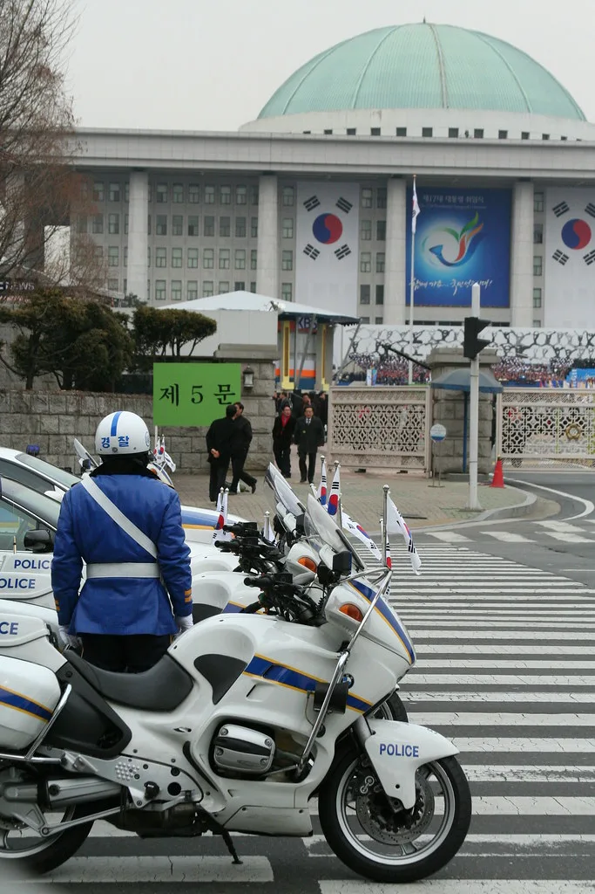
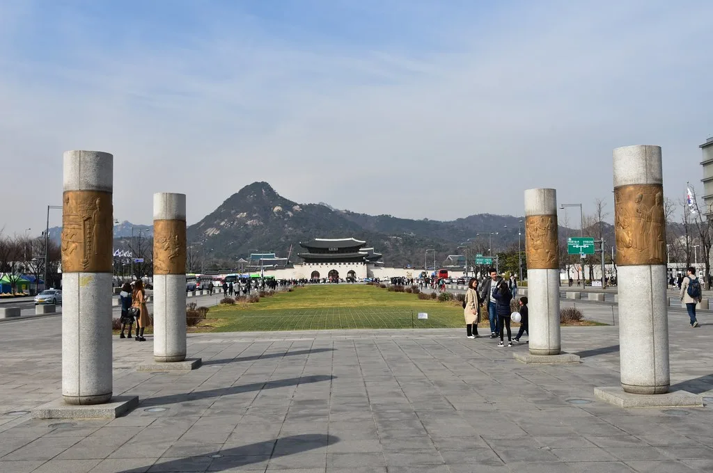

이재명 대통령 지지율 38.9%…취임 후 첫 30%대, 7주 연속 하락
리얼미터가 에너지경제신문 의뢰로 지난 8월 24일부터 28일까지 전국 18세 이상 유권자 2509명을 대상으로 조사한 결과, 이재명 대통령의 국정수행 긍정 평가는 38.9%로 집계됐다. 취임 이후 처음으로 30%대로 내려앉은 수치이며, 주간 단위 조사에서 7주 연속 하락세가 이어졌다. 부정 평가는 58.7%로 같은 기간 1.8%포인트 올라, 긍정과 부정의 격차가 20%포인트 가까이 벌어졌다.
지지율 흐름은 취임 100일 안팎까지 유지되던 강세가 여름을 지나며 빠르게 꺾인 모습이다. 6월 취임 직후 60%를 웃돌던 긍정 평가는 대출 규제와 공급 확대를 오간 부동산 정책, 잇단 인사 논란, 검찰·법원을 둘러싼 사법 현안이 차례로 도마에 오르면서 매주 조금씩 깎였다. 8월 들어 40%대 초반까지 밀린 데 이어 이번 조사에서 30%대에 진입하면서, 취임 이후 이어지던 이른바 '허니문' 국면이 사실상 끝났다는 평가가 나온다. 리얼미터는 긍정과 부정의 격차가 크게 벌어진 점을 들어 국정 운영 동력에 부담을 주는 신호라고 진단했다.

연령대별로 보면 40대와 50대의 이탈이 두드러졌다. 50대에서 긍정 평가가 한 주 사이 7.5%포인트, 40대에서 3.1%포인트 각각 빠졌고 60대와 70대 이상도 소폭 하락했다. 반면 30대에서는 8.8%포인트 오르며 반등했다. 권역별로는 대전·세종·충청이 8.5%포인트 급락했고, 광주·전북과 대구·경북에서도 하락했다. 중도층이 지지를 거둬들인 흐름이 지표 전반에 반영된 것으로 풀이된다.
리얼미터는 하락 요인으로 집값과 전월세 부담이 커지면서 나빠진 부동산 민심을 가장 먼저 꼽았다. 정부가 대출 총량을 조이면서도 수도권 공급 확대를 예고했지만, 실수요자 사이에서는 내 집 마련이 더 어려워졌다는 불만이 이어졌다. 여기에 대법관 후보자 임명을 둘러싼 위헌 논란, 제주 지역 실종 사건 수사 과정에서 불거진 경찰에 대한 불신, 유시민 작가의 발언을 계기로 표면화한 여권 내부 갈등 등이 복합적으로 작용했다고 분석했다. 특정 사건 하나보다 여러 악재가 겹치며 국정 전반에 대한 피로감이 누적됐다는 설명이다.
정당 지지도 조사에서는 더불어민주당이 43.1%, 국민의힘이 37.7%로 나타나 두 당의 격차가 한 자릿수로 좁혀졌다. 조국혁신당은 4.4%, 개혁신당은 2.6%, 진보당은 1.4%였고 지지 정당이 없다고 답한 무당층은 9.0%였다. 대통령 지지율이 흔들리는 사이 원내 1당인 민주당의 지지세도 함께 눌리는 양상이다.

대통령실은 8월 30일 단행한 6개 부처 개각을 반등의 계기로 삼겠다는 기류다. 경제부총리를 비롯해 국토·국방·법무 등 주요 부처 장관 후보자를 한꺼번에 교체하며 국정 쇄신 의지를 앞세웠고, 물가와 청년 취업, 부동산 세제 등 민생 현안에서 성과를 내는 데 집중하겠다는 방침이다. 여당 일각에서는 인적 쇄신만으로는 부족하며 정책 방향 자체를 손봐야 한다는 목소리도 나온다.
여론조사 전문가들은 추석 연휴 전후의 장바구니 물가와 정기국회에서의 예산·입법 성과가 이후 지지율의 분수령이 될 것으로 본다. 개각으로 새로 꾸려질 경제팀이 부동산과 물가에서 체감할 만한 변화를 만들어내는지가 관건이라는 것이다. 이번 조사의 표본오차는 95% 신뢰수준에서 국정수행 평가가 ±2.0%포인트, 정당 지지도 조사(8월 27~28일, 1006명)가 ±3.1%포인트다. 자세한 조사 개요와 질문지, 응답률은 중앙선거여론조사심의위원회 홈페이지에서 확인할 수 있다.